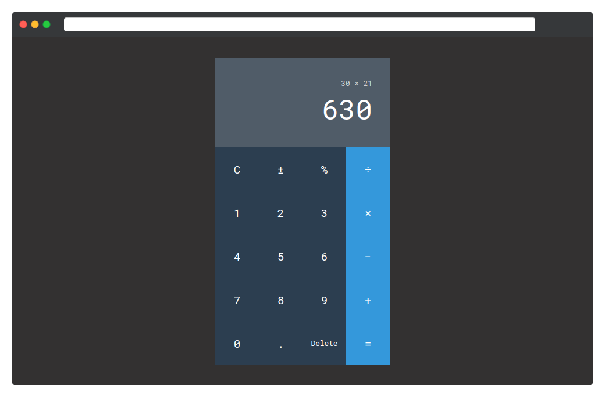

Реализуйте калькулятор по следующему макету:

В шаблоне реализовано центрирование калькулятора по всем осям. Подробнее это вы изучите в курсе по Flex.
Стили обёртки
- Ширина:
300 пикселей - Цвет фона:
#2c3e50 -
Шрифт:
Roboto Mono. Файлы шрифтов подключаются из**https://fonts.googleapis.com**
Стили блока с результатом вычислений
- Внутренние отступы: по 30 пикселей
- Цвет текста: белый
- Цвет фона: #505c68
- Выравнивание по правому краю
Внутри располагается два параграфа:
-
Выражение имеет цвет
#ced4d9и размер шрифта в80% - Результат вычисления имеет шрифт размером 3em
Параграфы имеют отступы по 5 пикселей сверху и снизу.
Стили кнопок
Создайте обёртку под каждую строчку с кнопками. Внутри строчки равномерно
размещается по 4 элемента: для этого воспользуйтесь свойствами
column-count и column-gap.
- Высота кнопок:
75px -
Кнопки являются блочным элементом. Используйте свойство
displayсо значениемblock - Размер шрифта:
1.2em -
Сбросьте стандартные стили кнопок. Это свойства
borderиbackground -
Установите курсор
pointer. Для этого используйте свойствоcursor - При наведении на кнопку её фон меняется на
#364c63 - Кнопка Delete имеет размер шрифта в
80%
Каждая четвёртая кнопка в строке имеет синий цвет. Для этого в CSS файле
существуют стили для класса .bg-blue.
Используйте спецсимволы HTML для встраивания правильных символов. Это делается с помощью специальных мнемоник — конструкций сообщающих браузеру отобразить символ, которого нет в стандартной раскладке клавиатуры. Эти символы вставляются напрямую в HTML разметку. Каждая мнемоника имеет определённый синтаксис: начинается с амперсанда & и заканчивается точкой с запятой ;
- Минус: −
- Плюс-минус: ±
- Деление: ÷
- Умножение: ×
- Точка: .
- Равно: =
- Процент: %
Подсказки
- Обратите внимание на доступные классы внутри файла app.css. Некоторые из них могут пригодиться.
-
Для кнопок используйте специальный тег
<button>. Это обеспечит правильную семантику и доступность.